1.首先我们需要创建一个项目，有两种方式：
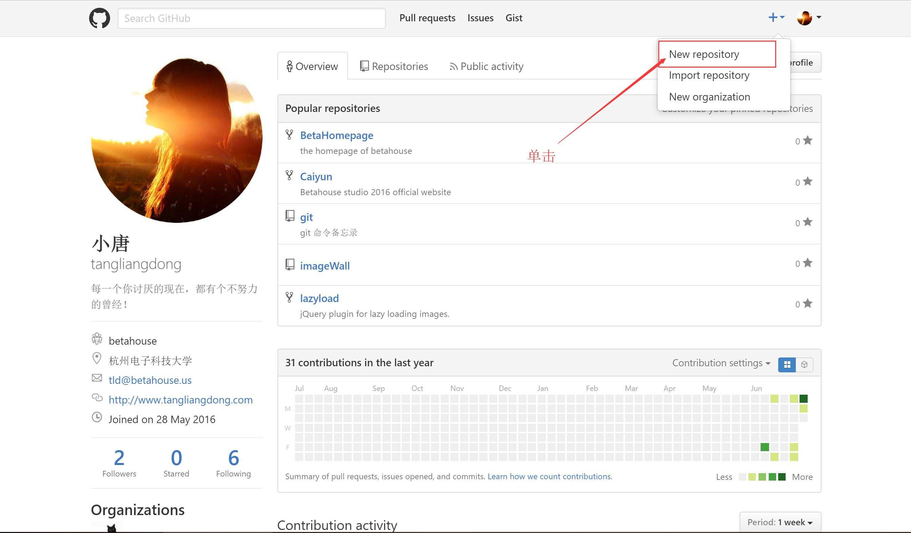
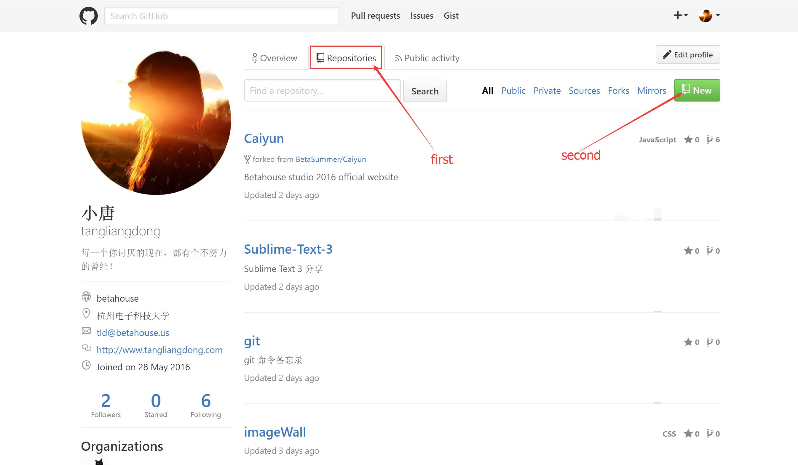
之后，我们会进入项目的创建页面
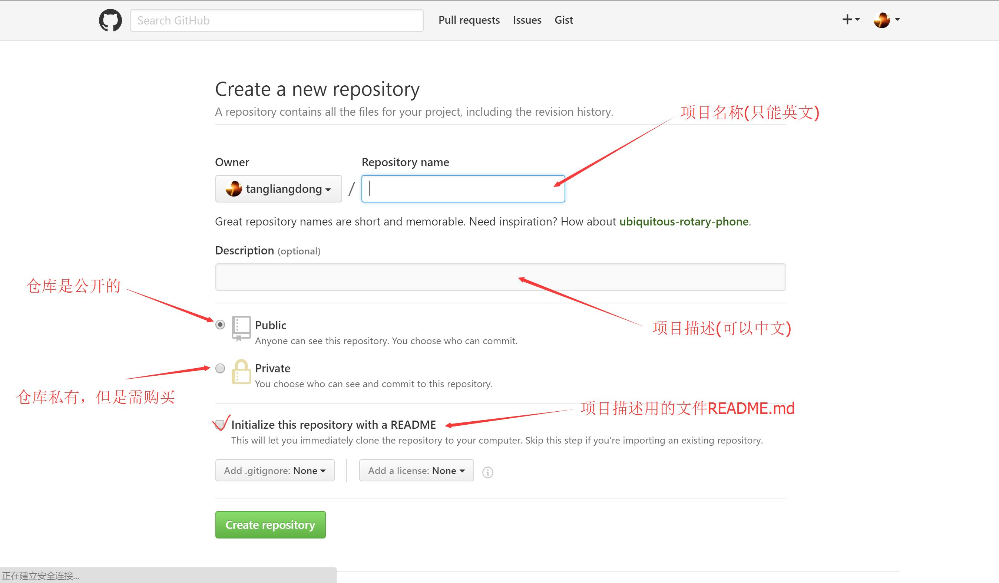
这就是我们项目的首页，
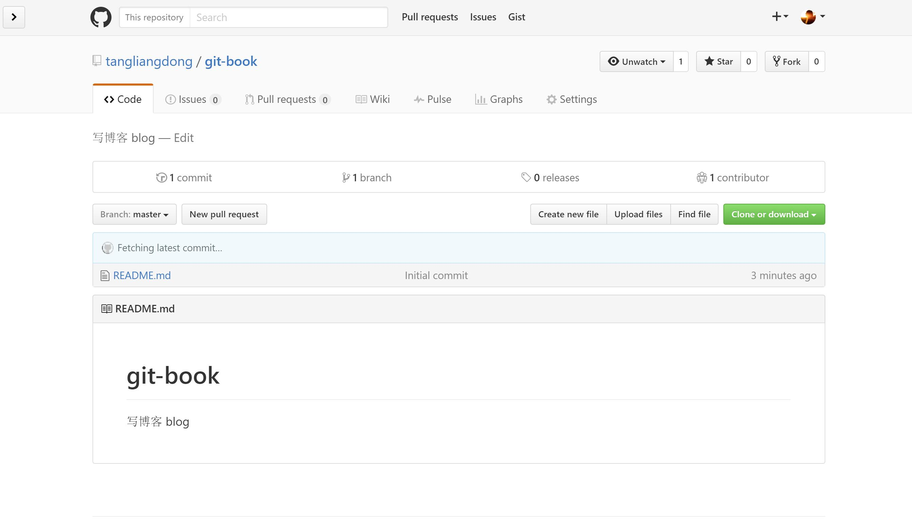
然后我们就需要clone到本地，进行项目的更新，修改。
当然在此之前，我们需要在电脑上下载 git,还有一些需要配置的，可以参考 git初始配置;
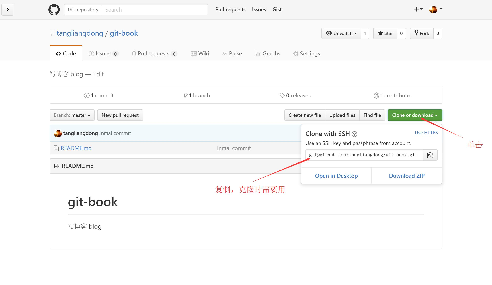
然后在你本地找一个文件夹当做存放git项目的仓库，在该文件夹下，单击右键选择 Git Bash Here，输入 git clone git@github.com:tangliangdong/git-book.git
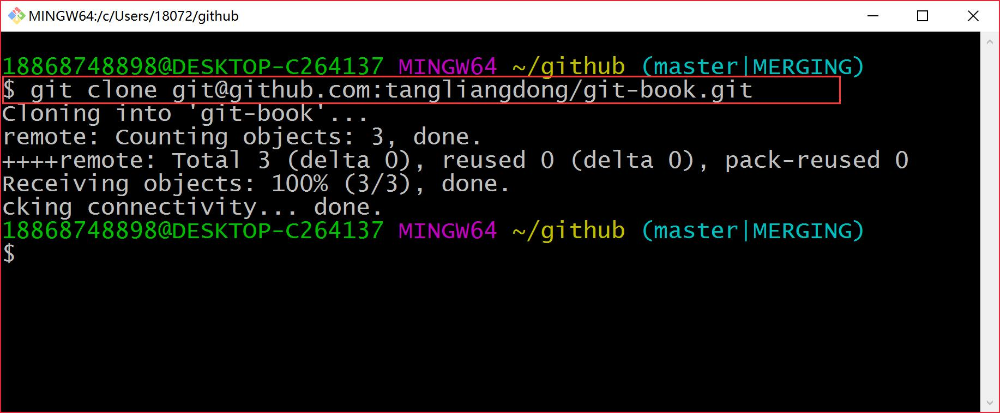
这样就算克隆成功了。这就算刚克隆下来的项目的根目录。
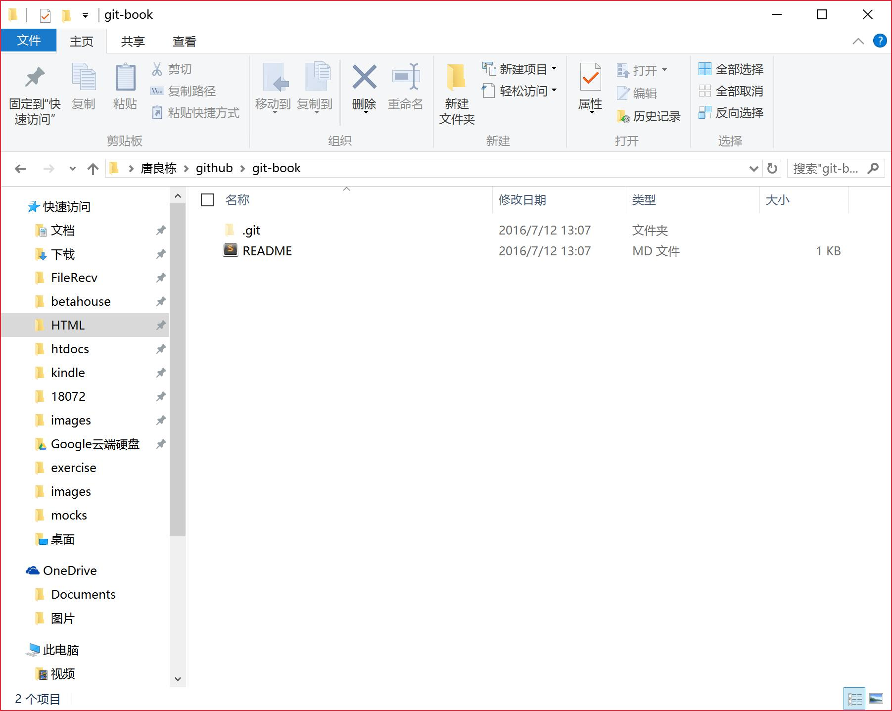
用编辑器打开后就能用markdown语法进行书写，markdown可以去学习下，不难
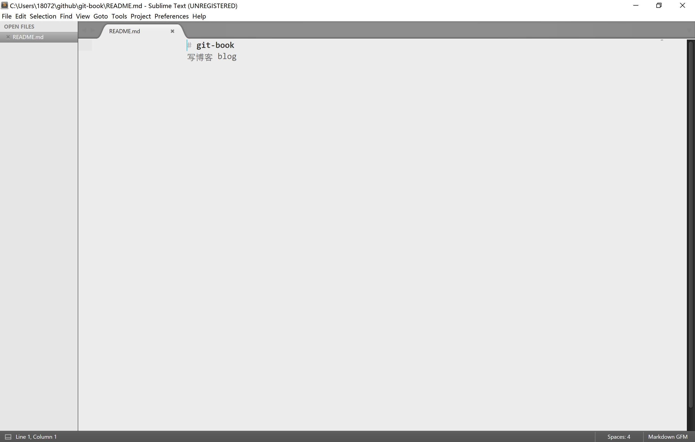
在我们完成后，就可以向仓库提交文件。
在我们的项目的根目录下，打开git(就是之前提到的打开步骤)，输入git add . (意思是将所有更新过的文件放到暂存库，等待提交)。
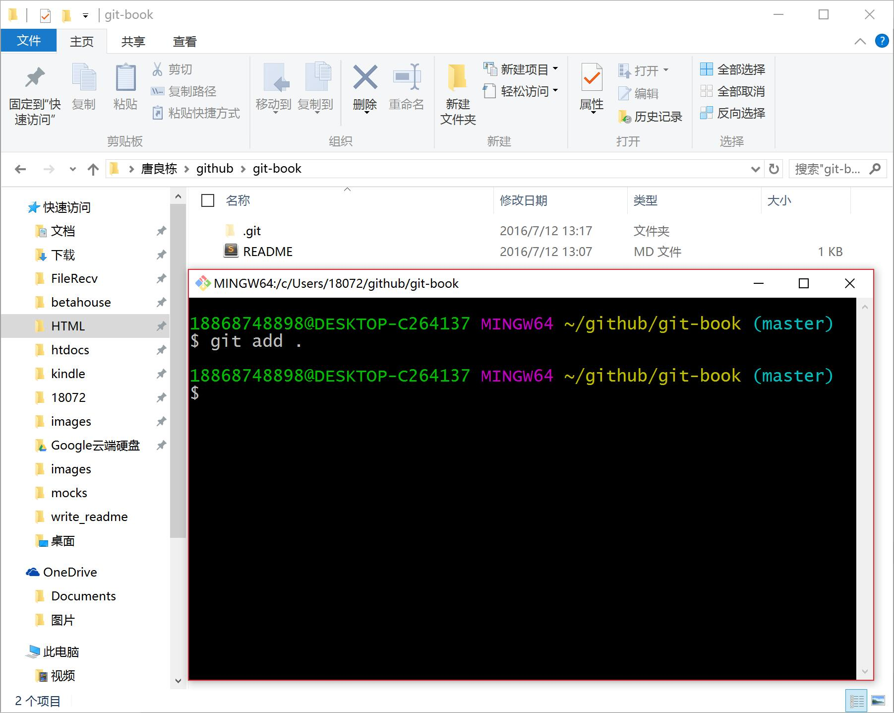
再输入git commit -m 'first' (first代表的是我们给这个commit标注的信息)提交到本地仓库，我们可以通过输入git log 来查看我们提交的历史记录。
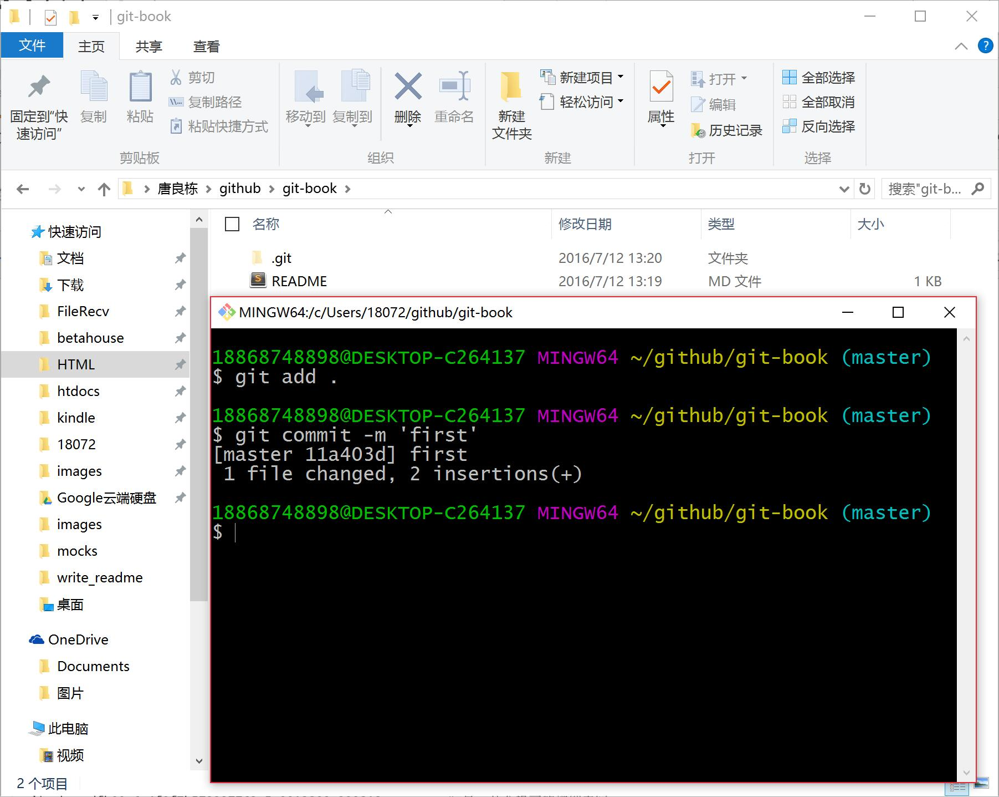
然后我们可以将其提交到github远程仓库，输入git push origin master
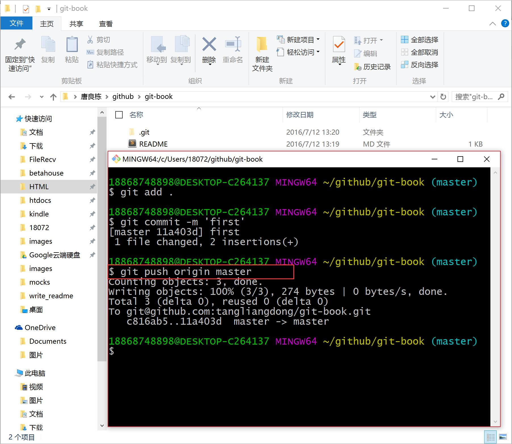
这样我们就成功的同步到了github上，我们可以去github上就会发现我们多了一次commit，
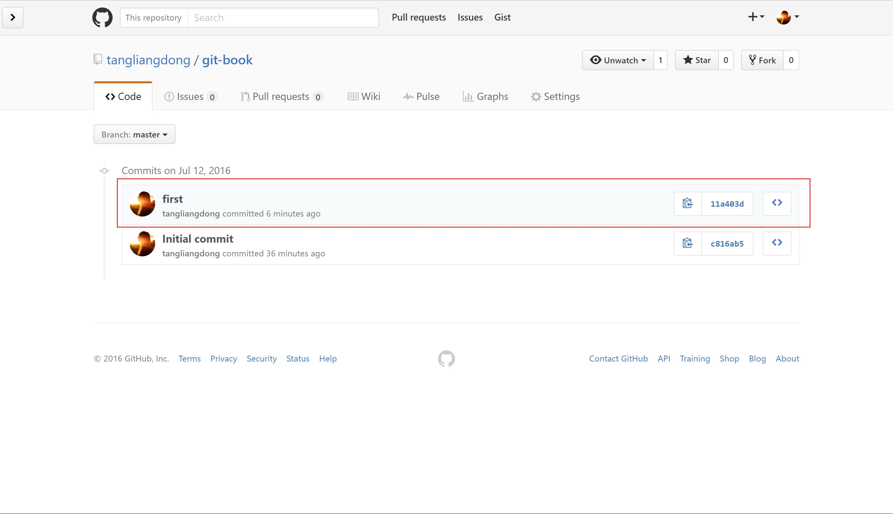
这里讲的步骤比较简单，具体的可以看git教程